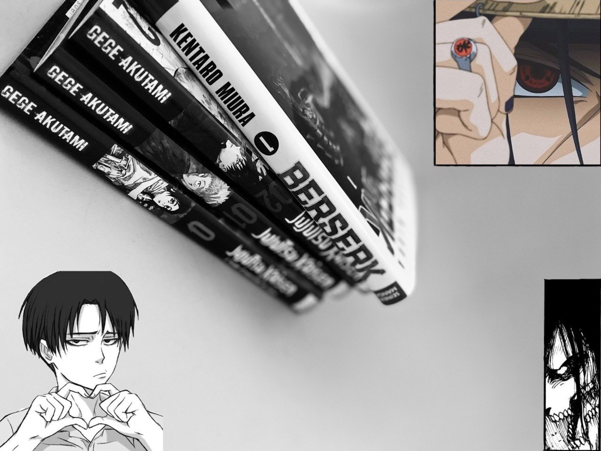
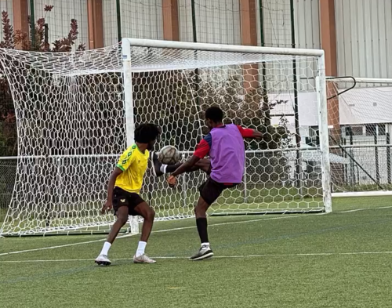
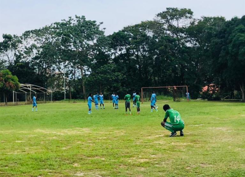
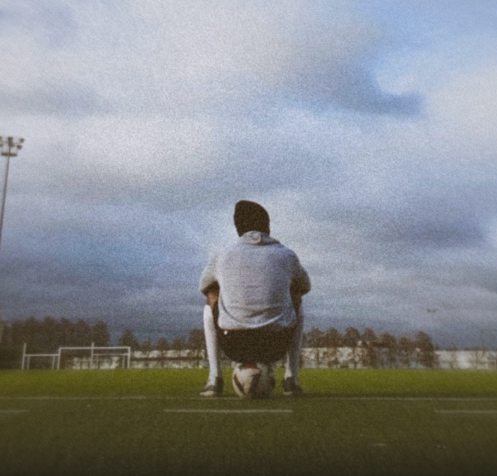

Cette page est la partie loisir de mon site.
Ici il y'a moins de professionnalisme et plus de
personnel.
Vous y découvrirez quelques-unes de mes passions en dehors de l'informatique.
On commence avec ma première passion, un de mes tous premiers cadeaux de Noël. J'ai toujours adoré cet instrument même si en grandissant j'y joue de moins en moins.
Ensuite, nous avons mon deuxième passe-temps favori. Je suis très passionné par la culture japonaise et ses différentes œuvres, plus particulièrement l'univers des mangas. Un de mes rêves est de visiter ce beau pays qu'est le Japon. 
Je suis également un amateur de jeux vidéos, bon j'y passe forcément beaucoup moins de temps depuis la reprise des cours mais ça reste un divertissement que j'aime beaucoup.

Nous arrivons à ma passion numéro 1. Que ce soit dans le fait de le pratiquer, de le regarder à la télévision ou d'y jouer, le football me procure énormément de bien-être et je ne peux vraiment pas m'y passer.


